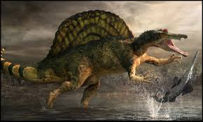

Theropod Encyclopedia is an initiative to bring alive the full glory of the Theropods which, in our opinion, were some of the greatest animals ever to walk the Earth. Every single family and clade under Theropoda is analysed here, with stellar images and cladograms, from wikipedia and other sources (credits are in this page). This site is currently under development at GitHub. (Some chapters are still absent. We apologise for the inconvenience).

(This is an image of Spinosaurus Aegyptiacus from BBC Planet Dinosaur Episode 1)
We sincerely thank the following for usage of the images in this site:
Homepage 1st pic : (unknown)
Homepage 2nd pic : https://allyouneedisbiology.wordpress.com/tag/theropod/
Cladogram Page: https://www.researchgate.net/figure/Quadrate-based-phylogeny-of-non-avian-theropods-Strict-consensus-cladogram-from-most_fig6_289506620
Dinosaur Records 1st pic: https://planetdinosaur.fandom.com/wiki/Argentinosaurus
Dinosaur Records 2nd pic: http://dinosaurpictures.org/Sauroposeidon-pictures
Dinosaur Records 3rd pic: http://dinosaurpictures.org/Mamenchisaurus-pictures
Dinosaur Records 4th pic: https://en.wikipedia.org/wiki/File:Diplodocus_carnegii.jpg
Dinosaur Records 5th pic: https://www.thoughtco.com/things-to-know-compsognathus-1093780
Dinosaur Records 6th pic: http://cavanscott.com/2011/09/14/planet-dinosaur-%E2%80%93-the-official-book-of-the-bbc-tv-series-out-now/
Dinosaur Records 7th pic: https://www.bbc.co.uk/programmes/p0119616
Dinosaur Records 8th pic: https://luisvrey.wordpress.com/2015/09/20/genesis-of-a-feast-the-trike-decapitation/
Dinosaur Records 9th pic: https://www.wikiwand.com/simple/Shantungosaurus
Dinosaur Records 10th pic: https://fossil.fandom.com/wiki/Lambeosaurus
Dinosaur Records 11th pic: https://www.extinctanimals.org/troodon.htm
Dinosaur Records 12th pic: http://dinosaurpictures.org/Pentaceratops-pictures
Dinosaur Records 13th pic:
Dinosaur Records 14th pic:
Copyright Theropod Encyclopedia, 2019 (Images from Internet)